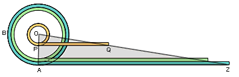

Salió ayer, la instrucción vaticana, de la Congregación para el Clero: "El presbítero, pastor y guía de la comunidad parroquial"; sobre los presbíteros (curas; ordenados y comunes - y párrocos). Sé de uno o dos -al menos- curas que suelen leer este weblog, cosa que me alegra mucho (no todos los hits son de chicos buscando fotos... ).
-
...
Algunas corrientes culturales contemporáneas confunden la virtud interior, la mortificación y la espiritualidad con una forma de intimismo, de alienación y, por tanto, de egoísmo incapaz de comprender los problemas del mundo y de la gente.
Se ha desarrollado también, en algunos lugares, una tipología multiforme de presbíteros: desde el sociólogo al terapeuta, del obrero al político, al "manager"... hasta llegar al sacerdote "jubilado". A este propósito se debe recordar que el presbítero es portador de una consagración ontológica que se extiende a tiempo completo. Su identidad de fondo hay que buscarla en el carácter conferido por el sacramento del Orden, por el cual se desarrolla fecundamente la gracia pastoral.
Por tanto, el presbítero debería saber actuar siempre en cuanto sacerdote. Él, como decía San Juan Bosco, es sacerdote tanto en el altar y en el confesionario como en la escuela o por la calle: en cualquier sitio.
Alguna vez los mismos sacerdotes son inducidos, por circunstancias actuales, a pensar que su ministerio se encuentra en la periferia de la vida, cuando en realidad se encuentra en el corazón mismo de ella, puesto que tiene la capacidad de iluminar, reconciliar y renovar todas las cosas.
Puede suceder también que algunos sacerdotes, tras haber comenzado su ministerio con un entusiasmo cargado de ideales, experimenten el desinterés y la desilusión, e incluso el fracaso. Muchas son las causas: desde la deficiente formación hasta la falta de fraternidad en el presbiterio diocesano, desde el aislamiento personal hasta la ausencia de interés y apoyo por parte del Obispo mismo y de la comunidad, desde los problemas personales, incluso de salud, hasta la amargura de no encontrar respuestas y soluciones, desde la desconfianza por la ascesis y el abandono de la vida interior hasta la falta de fe.
De hecho el dinamismo ministerial exento de una sólida espiritualidad sacerdotal se traduciría en un activismo vacío y privado de valor profético. Resulta claro que la ruptura de la unidad interior en el sacerdote es consecuencia, sobre todo, del enfriamiento de su caridad pastoral, o sea, del descuido a la hora de "custodiar con amor vigilante el misterio del que es portador para el bien de la Iglesia y de la humanidad".
Entretenerse en coloquio íntimo de adoración frente al Buen Pastor, presente en el Santísimo Sacramento del altar, constituye una prioridad pastoral superior con mucho a cualquier otra. El sacerdote, guía de una comunidad, debe poner en práctica esta prioridad para no caer en la aridez interior y convertirse en canal seco, que a nadie puede ofrecer cosa alguna. ...
...
La Eucaristía debe ocupar para el sacerdote
"el lugar verdaderamente central de su ministerio", porque en ella está
contenido todo el bien espiritual de la Iglesia y es de
por sí fuente y culmen de toda la evangelización.
De aquí la posición tan relevante que ocupa dentro de la jornada
la preparación a la Santa Misa, su celebración cotidiana, la acción
de gracias y la visita a Jesús Sacramentado...
Hay días que uno recuerda eso que dijo no se quién: "Hubo tiempos en que me yo creía cerca de la paz de los santos; más tarde supe qué sólo era buena salud y buena digestión"...
Muchos de los desorientados navegantes que caen acá, lo hacen buscando "fotos" de algo... Fotos de Dios, del diablo, de Jesús, de Moria Casán, ... y cosas peores. Y también, sencillamente "fotos" a secas.
No me hace demasiada gracia atraer tantas visitas por ese lado (y el sentimiento debe ser mutuo): personas que tienen semejante pobreza de vocabulario como para usar la palabra "foto" como sinónimo de "imagen" ... difícil que podamos interesarnos mutuamente.
Encuentro una curiosidad: en Google de Argentina, la búsqueda
de "fotos" a secas , restringida a sitios del país, me pone
en primer lugar. Con lo dicho antes, esto no es algo que me alegre demasiado...
Y eso que, expresamente para minimizar desencuentros, puse lo de "católico" en el título...
Pero la curiosidad se completa con el segundo lugar:
Fotos de Nietzsche, un sitio
conocido por mí, mantenido por un tipo muy conocedor de N. y de la filosofía
"posmoderna" (Deleuze, Derrida, Foucalt) que tanto seduce a los argentinos...
Con esta persona tuvimos unos cruces
(gratamente violentos) en una lista de correo, hace tiempo.
Bueno. Saco un textito de Nietzsche, personaje jodido si los hay, y que de vez en cuando me cae muy simpático; pero muy de vez en cuando:
-
...
amor fati: el no querer que nada sea distinto, ni en el pasado, ni en el futuro, ni por toda la eternidad. No sólo soportar lo necesario, y menos aún disimularlo -todo idealismo es mendacidad frente a lo necesario-, sino amarlo...
(ufa ... seguimos agregando palabras para atraer a indeseables buscadores desorientados ...)
Del amado y de la amada (1 de 4) :
Hace poco, a cuento de una discusión en un weblog yanqui sobre ciertos rasgos "masculinos" de Dios (Jesús -Dios encarnado- "varón"; Dios "Padre" ....) mencionábamos la analogía (muy mística y muy tradicional) que representa la relación entre el alma del hombre y Dios con la imaginería erótica, y en la cual al alma le corresponde el papel "femenino"...
Quiero traer una serie de ilustraciones del tema.
Y acá va la primera; la más original y la más lejana... pero sirve para ilustrar (y con mucha fuerza) todo eso de que "Dios nos amó primero; es Dios el que busca al alma humana, en primer lugar, y no al revés; para nosotros, como para la mujer cortejada, el papel principal es el de "ceder", el de abandonarse; toda negación de Dios, no es más que una huida" etc.
Francis Thompson, poeta inglés (1857 - 1907), de vida turbulenta y azarosa (alcohol y opio incluidos), tiene un poema muy famoso con una imagen original (y un poco chocante) : The Hound of Heaven; el lebrel, el perro de caza que persigue a la liebre herida, es Dios que persigue -durante toda la vida tal vez- al alma que huye con miedo.
Encontré una traducción al español de un argentino; más bien una adaptación,
bastante libre, pero fiel al espíritu y buen gusto.
Presentamos entonces esta versión de El lebrel
del cielo...
- ....
He escalado esperanzas,
me he hundido en el abismo deleznable,
para huir de los Pasos que me alcanzan:
persecución sin prisa, imperturbable,
inminencia prevista y sin contraste.
Los oigo resonar... y aún más fuerte
una Voz que me advierte:
-"Todo te deja, porque me dejaste".
...
... acá, completa y en versión bilingüe.
¿Cuándo aceptarás, yegua,
¿Cuándo, pájaro pinto,
romperás tiranías
que te hacen imposibles
y el árbol más oculto
¿Cuándo serás, cometa,
libre por fin del hilo
¿Cuándo dejarás, árbol,
el yugo que te imponen
para crecer atento
¿Cuándo, pájaro, yegua,
¡ay!, ¿cuándo, cuándo, árbol?
Cuando mi cuerpo vague
No es necesario decirlo, pero digámoslo para los -como yo-
no muy rápidos para el idioma... : asunto está aquí
en la acepción de participio de asumir, como se usa
en la expresión "la Virgen María asunta a los cielos".
Y -más elemental todavía, pero para los argentinos -... cometa = barrilete.
Y, fuera de todo: qué curioso (no me animo a usar otros adjetivos, porque no estoy seguro de entenderlo bien) ese primer pareado: parece que, en el caso de la yegua, esa "libertad" anhelada se diera en la obediencia "al rigor de la rienda"...
No suelo entrar a la página de AICA (Agencia Informativa Católica Argentina) ... entre que el tono "formal-oficialista-clerical" no me es muy simpático en general, y que mi apreciación de los organismos clericales (del episcopado para abajo) argentino no está precisamente por las nubes... (shhh... digo yo, haciendo callar al demonio de la soberbia, la maledicencia y el juicio fácil...)
Pero ayer entré, a indicación de Ignacio, para encontrarme en el resumen del día con dos noticias, quizás insignificantes pero agradablemente atípicas:
Una: lo que dijo el arzobispo de La Plata, Héctor Aguer, al ordenar
a tres nuevos presbíteros (sacerdotes) : exhortó a no anteponer
“nada al amor del Señor y de las almas: ni la comodidad que podrían
permitirse, ni la seguridad de la que carecen los pobres,
ni las vacaciones que merecen los trabajadores,
ni la benéfica siesta, ni el famoso ‘día libre’,
intangible conquista de la burguesía clerical"
Guau! En otra boca, semejante frase me sonaría a
más-de-lo-mismo; en la de un obispo argentino,
suena gratamente viril (cierto es que Aguer rompe un poco el molde)...
Y ya sé que ese lenguanje no es necesario, ni suficiente; pero igual, reconforta un
poquito...
Dos: una noticia intrascendente, pero insólita:
-
La concentración en Plaza Congreso el martes 15 por la noche para recibir la reliquia del Padre Pío (una venda ensangrentada por sus estigmas) y la posterior procesión de antorchas hasta Nuestra Señora de la Piedad,
fue un fracaso. El anunciado temporal, que se hizo presente con singular fuerza, ahuyentó hasta a los más piadosos. Como para recordarles que la vida del Padre Pío fue un largo y constante via crucis. Recién en el templo se vivió un reflejo de la gloria de que el santo de Pietrelcina goza en la eternidad.
Bien por el que mandó ese informe ; aunque uno no pueda predecirle una carrera muy exitosa dentro del periodismo...
John de Disputations se propone hacer una novena a San Antonio de Padua para encontrar al francotirador de Washington... No está mal.
San Antonio es el santo tradicionalmente invocado para encontrar las cosas perdidas; y otras cosas (novio/a ... "pedile a San Antonio / que te mande un novio" dice una canción). Es tenido en mucha consideración por esas devociones populares, que le adjudican un poder de "lograr cosas difíciles" casi ilimitado...
El mismo Sebastian Flyte (el sofisticado personaje de Evelyn Waugh), recuerdo, acudía a San Antonio cuando se le perdía su oso de peluche...
Es una devoción bien católica y bien simpática;
que, como suele pasar con estas cosas, a veces degenera y se sale de cauce
en determinados ambientes....
Hoy mismo, releyendo el volumen del diario
de Leon Bloy correspondiente al año 1902 (hace un siglo), encuentro esta perla;
una historia -aparentemente verídica- escuchada por él, ilustrativa aunque nada
"edificante":
Una mujer manda celebrar una novena de misas para pedir a San Antonio una
cierta "gracia temporal" (el cura no obtiene más detalles sobre el pedido).
Al décimo día, la devota viene a pedir una misa de acción de gracias,
que el santo parece haber ganado esforzadamente.
-El pariente aquel -dice ella- del cual yo debía heredar ha fallecido ayer,
exactamente cuando terminaba la última misa.
Hablando de música de acompañamiento ... recién mientras escribía sentía una especie de molestia vaga pero persistente ... y al rato me di cuenta de la causa: era que mi radio había caído en una temible estación "FM parroquial" y estaba pasando una de esos engendros de "rock cristiano" ... De un salto cambié a la 96.70 y ahora estoy feliz y enfervorizado con el segundo movimiento de la novena sinfonía de Beethoven.
Como diría un credo de esos de los míos: "Creo en Beethoven, Mozart y Bach ... (y si me apuran, en Loreena McKennit, Spinetta, y King Crimson)".
Pero en la "música cristiana",... ay.. no, no creo....
-
El rezo del Rosario: 31 días, 31 maneras -
Número 17
( por John Da Fiesole de Disputations; adaptación y traducción libre )
Muchas personas, sobre todo cuando están aprendiendo a rezar el Rosario,
suelen sentirse algo incómodas por la falta de conexión entre las palabras
que se pronuncian y los misterios que se meditan.
En el Ave María no hay nada referente a la Coronación
de Espinas, por ejemplo; y el mismo Jesús
advierte : "Cuando oren, no parloteen como
los paganos; ellos creen que serán escuchados
porque gastan muchas palabras...".
La respuesta de los teológos es que la oración no es -no debe ser- solamente palabras, sino un acto humano integral -movimientos, vocalización, meditación-; y que en el caso del Rosario las palabras pronunciadas tienen la función de "acompañar" -como una especie de música sacra- la contemplación de la faz de Cristo.
Pero las respuestas de los teólogos no siempre nos satisfacen.
Aquellos que no pueden dejar de preocuparse de estar
pronunciando palabras sin atender a su significado,
pueden adoptar una simple solución de compromiso:
tras enunciar el misterio, rezar un PadreNuestro
y un Ave María como oraciones específicamente
dirigidas al Padre y a María, prestando atención
al sentido de las palabras.
Después, una pausa para reconcentrarse
en el misterio, y rezar las nueve Ave Marías restantes
meditando. Finalmente, rezar el Gloria como un
verdadera oración de alabanza, agradeciendo
el haber obtenido respuesta a las oraciones que
iniciaron la década con las gracias que se recibieron
con las siguientes.
Agrego, (aunque en realidad no agrega mucho) la respuesta de un teólogo de peso que encuentro: dice el P. R. Garrigou-Lagrange en su "La Madre del Salvador y nuestra vida interior", hablando del Rosario:
-
...
Objectan algunos que no se puede pensar en las palabras y contemplar los misterios al mismo tiempo. A esto se responde: no es necesario meditar en las palabras del Ave María cuando se medita o se contempla espiritualmente tal o cual misterio. Esas palabras son como un canto de cuna, que adormece los oídos, que nos aisla del mundo, mientras los dedos están ocupados en desgranar las cuentas del rosario para indicarnos materialmente en qué decena estamos. De esta manera, queda ocupada la imaginación, mientras la inteligencia y la voluntad están unidas a Dios...
Fotos varias:
-
Nuevo Gran Hermano ahora con cama doble; "Arriba , Argentina!",
remata la presentadora Soledad Silveyra, icono cultural
democrático hasta no hace mucho.
- Niños
a la carta, para lesbianas. Pues pa que vean que los González somos
progresistas, joder.
- El aborto
es la principal causa de mortalidad materna, dice la típica periodista
de la Nación. Las estadísticas (ah, las estadísticas...) dice que
la tasa de mortalidad es de 1 por cada 100000 abortos, y que habría
que legalizarla para que pase a 0.4 (no hace falta aclarar, pero aclarémoslo,
que esa tasa de mortalidad no incluye las 100000 muertes infantiles que se
producen por esos 100000 abortos: sólo se cuenta la muerte de la madre).
- "Argentina no tiene políticos decentes porque tiene 30.000 desaparecidos",
enseña León Gieco, desde la tapa de una revista sionista.
- "El monopolio de la fuerza ya no está en los militares sino en el dinero” ; espeluznante
y traumática noticia ; en página 12
y de la mano
del inefable Costa-Gavras, que ha encontrado una veta artística originalísima:
"indignarse" del "vergonzoso silencio" de Pío XII; en otras palabras: darle a los burgueses
lo que ellos gustan comer.... y disfrazar su idolatría hacia el mismo dinero
con la máscara consoladora de lo ideológicamente correcto.
- "Antes de que alguien hiciera algo, el lo hizo todo". Leit-motiv de una campaña
publicitaria; se trata de vender la obra de Elvis Presley.
- Mural de Altuna en el subte; Altuna es uno de esos pornógrafos -también ideológicamente correcto, claro está- que tanto han contribuido a formar el alma de la juventud argentina de las últimas décadas.
-
El rezo del Rosario: 31 días, 31 maneras -
Número 15
- El Bautismo de Jesús
- El Milagro en las bodas de Caná
- El Anuncio del Reino
- La Transfiguración
- La Institución de la Eucaristía
( por John Da Fiesole de Disputations; adaptación y traducción libre )
Podemos meditar sobre los Misterios Luminosos, que revelan el Reino, hecho presente en la persona de Cristo:
Misterio de luz es ante todo el Bautismo en el Jordán. En él, mientras Cristo, como inocente que se hace 'pecado' por nosotros (cf. 2 Co 5, 21), entra en el agua del río, el cielo se abre y la voz del Padre lo proclama Hijo predilecto (cf. Mt 3, 17 par.), y el Espíritu desciende sobre Él para investirlo de la misión que le espera.
Misterio de luz es el comienzo de los signos en Caná (cf. Jn 2, 1-12), cuando Cristo, transformando el agua en vino, abre el corazón de los discípulos a la fe gracias a la intervención de María, la primera creyente.
Misterio de luz es la predicación con la cual Jesús anuncia la llegada del Reino de Dios e invita a la conversión (cf. Mc 1, 15), perdonando los pecados de quien se acerca a Él con humilde fe (cf. Mc 2. 3-13; Lc 47-48), iniciando así el ministerio de misericordia que Él continuará ejerciendo hasta el fin del mundo, especialmente a través del sacramento de la Reconciliación confiado a la Iglesia.
El misterio de luz por excelencia es la Transfiguración en el Monte. La gloria de la Divinidad resplandece en el rostro de Cristo, mientras el Padre lo acredita ante los apóstoles extasiados para que lo « escuchen » (cf. Lc 9, 35 par.) y se dispongan a vivir con Él el momento doloroso de la Pasión, a fin de llegar con Él a la alegría de la Resurrección y a una vida transfigurada por el Espíritu Santo.
Finalmente, la Institución de la Eucaristía; en la cual Cristo se hace alimento con su Cuerpo y su Sangre bajo las especies del pan y del vino, dando testimonio de su amor por la humanidad « hasta el extremo » (Jn13, 1) y por cuya salvación se ofrecerá en sacrificio.
Excepto en el de Caná, en estos misterios la presencia de María queda en el trasfondo. Los Evangelios apenas insinúan su eventual presencia en algún que otro momento de la predicación de Jesús (cf. Mc 3, 31-35; Jn 2, 12) y nada dicen sobre su presencia en el Cenáculo en el momento de la institución de la Eucaristía. Pero, de algún modo, el cometido que desempeña en Caná acompaña toda la misión de Cristo. La revelación, que en el Bautismo en el Jordán proviene directamente del Padre y ha resonado en el Bautista, aparece también en labios de María en Caná y se convierte en su gran invitación materna dirigida a la Iglesia de todos los tiempos: «Haced lo que él os diga» (Jn 2, 5). Es una exhortación que introduce muy bien las palabras y signos de Cristo durante su vida pública, siendo como el telón de fondo mariano de todos los «misterios de luz».
[Gracias a la persona que sugirió estos misterios y al que nos dio este comentario ]
-
Número 16
El Rosario es una oración importante, destinada a darnos frutos de santidad; pero ¿ qué hacer si no tenemos tiempo de rezarlo ?
Primero, revisar nuestra teoría del manejo del tiempo. Normalmente, aquello para lo cual no tengo tiempo es aquello para lo cual no me hago tiempo...
Más allá de eso, leemos en las normas para ganar una indulgencia rezando el Rosario : "La recitación de la tercera parte del Rosario [*] es suficiente; siempre y cuando las cinco décadas se reciten en forma continuada". Esto sugiere que, indulgencias aparte, las cinco décadas también pueden ser rezadas en forma discontinua.
Y es claro que, como devoción privada, no hay una manera "correcta" del rezar el Rosario (aunque hay maneras aprobadas, maneras frecuentes, maneras comprobadamente eficaces, etc).
En cualquier momento, de día o de noche, uno puede ponerse a pensar en un misterio, y recitar una década de oraciones. Si tenemos una rutina más o menos regular, encontraremos fácil cinco momentos al día para meditar durante cuatro minutos; podemos pasar así sobre todo un conjunto de misterios, y santificando el día de manera parecida a como la Liturgia de las Horas santifica el día de toda la Iglesia. Si mi viaje al trabajo lleva diez minutos [**], puedo dedicar dos misterios a la ida, uno en el trabajo , y otros dos a la vuelta.
Conozco un amigo que juega al ajedrez en un club; suele rezar el rosario, que mantiene en el bolsillo, durante el turno de adversario. No gana seguramente la indulgencia (aunque tal vez gana otra por usar devotamente un objeto de devoción) pero se las arregla para invertir algunos minutos en la contemplación de la vida, muerte y resurrección de Cristo; que no es poca cosa.
[*] Cuando se habla de "Rosario completo" y de "la tercera parte del Rosario", se entiende que el Rosario se considera completo cuando abarca todos los misterios (150 AveMarías ; o 200 a partir de ayer... ), y la "tercera parte" (o "cuarta parte" a partir de ayer) se refiere a un solo conjunto de cinco misterios; en cambio cuando uno dice "voy a rezar un rosario", se refiere normalmente a esto último, es decir a 50 AveMarías - o una pasada al collar de cuentas.
[**] Acá en Buenos Aires, lo normal es que el viaje al trabajo lleve mucho más de diez minutos... a muchos alcanza para rezar un rosario en la ida y otro en la vuelta... será por eso, pienso ahora, que los argentinos estamos tan desbordados de santidad...
Hermana luz, hermana de las cosas:
En mis formas está toda tu gama:
Milagros tenues y la suma llama.
A mí me purificas y remozas.
Hermana luz: cual yo, tú eres anciana
Y has dormido muy lejos de este limo
En que la flor, la carne y el racimo
Gozan y mueren sin tener mañana.
Jacobo Fijman
(publicado en el número último
de la revista Parte de Guerra)
Grandioso post de Dylan resucitado. Dichosamente refrescante ("como una brisa de aire puro", casi digo ...pero delante de gente que sabe poesía, es una vergüenza decir esas cosas...).
El credo de la libertad; el amor puro a la belleza; en las precisas antípodas del fariseísmo.
En el mes del Rosario, John de Disputations se puso a hacer una serie de comentarios que yo estoy traduciendo ... Viendo lo cual, el Papa no quiso ser menos, y hoy se mandó con una Carta Apostólica ROSARIUM VIRGINIS MARIAE, en la cual nos plagia descaradamente varias cosas [*]
Propone agregar un cuarto conjunto de cinco misterios (los "Misterios de Luz") y declara el año que sigue (Octubre 2002-Octubre 2003) como "El año del Rosario"... todo para rompernos los esquemas a los pobres comentaristas [**] (y para salir en la tapa de Clarín!)...
Hablando en serio, está linda, la carta. La termino de leer y tal vez después comento algo más...
[*] Por ejemplo, me copia mi originalísima idea de que los últimos dos misterios gozosos tienen una componente triste, como preparando los misterios dolorosos (ver párrafo 20) ... y no me cita ! a quién hay que quejarse ?
[**] Me tiró al diablo mi analogía de la secuencia gozo-dolor-gloria con los movimientos de una sonata, por ejemplo... maldición... ya me parecía que era algo traído de los pelos... pero tal vez puedo salvarla recordando que, la forma clásica de tres tiempos evolucionó después a una de cuatro ... hum... pero generalmente es un "scherzo"; y no pega demasiado bien.... hum... veremos...
-
El rezo del Rosario: 31 días, 31 maneras -
Número 13
( por John Da Fiesole de Disputations; adaptación y traducción libre )
Los misterios del Rosario nos llevan a través de la vida, muerte y resurrección de Jesucristo hacia el establecimiento de su Reino. El cristianismo enseña que estos son en verdad son los eventos centrales de la creación, y han sido prefigurados en las vidas de los precursores elegidos por Dios y de los discípulos de Jesús.
Los misterios se proyectan en el tiempo, hacia atrás
y hacia adelante. El papa Juan Pablo II enseña en Dies
Domini que la Resurrección es el antitipo del primer
día de la creación y también la prefiguración del Ultimo Dia,
el día sin ocaso.
Tiene sentido, entonces, meditar en los misterios
desplegándolos en el tiempo,, escuchando sus ecos a través
de las edades.
Una forma de lograr esto es identificando cuatro marcos de tiempo
para cada misterio: el tiempo del evento, el tiempo anterior,
el tiempo posterior, y el tiempo actual.
Las meditaciones de todos los misterios dentro de una semana
pueden hacerse relativas al mismo esquema
de tiempos (antes, durante, después, ahora),
en forma cíclica, repitiendose cada cuatro semanas.
El Salterio de las cuatro semanas puede ser de ayuda
para fijar este esquema... si uno conoce el salterio de
las cuatro semanas. Si no, podemos atar los tiempos
al número del domingo de cada mes: el primer domingo
para el "antes", el segundo para el "despues", etc;
si hay un quinto domingo, podemos asignarlo a "la eternidad".
Los tiempos del "durante" y el "ahora" son más o menos sencillos de encarar (salvo quizás el "durante" para el misterio de la Coronación de la Virgen); no tanto para el "antes" y el "después". Hay dos posibilidades:
Primero: elegir algo que se encuentre lejos del misterio en el tiempo (una historia del Antiguo Testamento para el antes, algo de los Hechos de los Apóstoles o de la Iglesia primitiva para el "después"). Por ejemplo, la historia de Ana prefigura la Anunciación, y la visión de Ananías le hace eco.
Segunda posibilidad: pensar en tiempos inmediatamente anteriores y posteriores al misterio, y meditar respecto de cómo Dios actúa en la historia, propagando sus acciones y sus efectos en el tiempo. Por ejemplo: antes de la Anunciación María era, según todas las apariencias, una mujer común, y sin embargo ella había sido preparada desde toda la eternidad para su papel de Madre de Dios; después de la Anunciación, ella se dispuso con prontitud a servir a su Señor en una senda que todavía no comprendía del todo.
-
Número 14
- La Resurrección Para Tomás, o bien Jesús estaba muerto, o bien Jesús era Dios. Una cristología que en verdad expulsa una multitud de herejías que iban a llegar... algunas de las cuales están aún entre nosotros. Quizás estamos demasiado acostumbrados a la imagen de Jesús como nuestro amigo en el cielo, y nos cuesta apreciar qué significaba para un Judío de Galilea descubrir de repente que estaba delante del Señor.
- La Ascensión Después de la Ascensión, Tomás volvió a encontrarse entre los mismos discípulos, llorosos, cobardes y derrotistas que habían acompañado a Jesús. Tomás mismo no debe haber sido muy diferente que el resto... Y sin embargo, la experiencia compartida de la compañía del Señor Resucitado unió a estos hombres, junto con María la madre de Jesús, para orar en la habitación cerrada en Jerusalén, esperando el cumplimiento de la promesa. A pesar de todo, se las arreglaron para ser la Iglesia.
- La venida del Espíritu Santo: Según la leyenda, después de Pentecostés Tomás fue escogido para predicar el evangelio en la India. El no estaba muy dispuesto, y recién cuando Jesús se le apareció con la sugerencia de ser vendido como esclavo, se decidió a marchar. (y yo he recibido el Espíritu en el bautismo y en la Confirmación... cuán dispuesto he estado para seguir el camino que el Espíritu me marca?)
- La Asunción. Según algunos apócrifos, Tomás también se atrasó para asistir a la Dormición de la Virgen: llegó a Jerusalén justo para alcanzar a verla subir al cielo. En respuesta a la súplica de Tomás, ella dejó caer su cinturón para él (alguno dirá que "sobre él"), y así Tomás llevó la noticia de la asunción a los demás apóstoles. También nosotros, que no llegamos a asistir a la sepultura de María, podemos de todos modos suplicarle, confiados en que nos dará su bendición.
- La Coronación: Si Jesús es el Señor de Tomás, María es su Señora. Cuando, tras evangelizar Persia e India, Tomás fue martirizado, de manos de su Rey y de su Reina habrá recibido su propia corona. Esperamos un destino similar, si menos exaltado, para aquellos de nosotros que permanezcamos fieles al llamado de Dios.
Santo Tomás, el Apóstol, es uno de mis santos patronos. Sus experiencias, tanto las canónicas como las apócrifas, son ejemplares; aunque su "timing" es terrible....
Vayan pues estos Misterios Tardíamente Gloriosos según Santo Tomás:
Habrá de notarse que en estas reflexiones no nos interesa particularmente las cuestiones de "historicidad"; no porque ese aspecto carezca de importancia, sino porque su lugar no está dentro de la plegaria devocional.
-
Los hechos muestran que casi siempre los pensamientos de los hombres están formados, como pensaba Marx, por las mentiras de la moral social.
Casi siempre; pero no siempre.
Esto también es cierto.
Hace veinticinco siglos, ciertos filósofos griegos, cuyos nombres mismos nos son desconocidos, afirmaban que la esclavitud es absolutamente contraria a la razón y a la naturaleza. Así como las fluctuaciones de la moral según los tiempos y los paises son evidentes, también es evidente que la moral que procede directamente de la mística es una, idéntica, inalterable. Esto se puede verificar considerando Egipto, Grecia, India, China, el budismo, la tradición musulmana, el cristianismo y el folklore de todos los países. Esta moral es inalterable porque es un reflejo del bien absoluto que se sitúa fuera de este mundo.
Es verdad que todas las religiones, sin excepción, han hecho mezclas impuras de esta moral y de la moral social, en dosis variables.
Ello no constituye menos la prueba experimental aquí abajo de que el bien puro y trascendente es real, en otros términos, es la prueba experimental de la existencia de Dios.
... Platón comparaba la sociedad con un gigantesco animal que los hombres están obligados a servir y que tienen la debilidad de adorar. El cristianismo, tan próximo a Platón en tantos puntos, contiene no sólo el mismo pensamiento sino la misma imagen. La bestia del Apocalipsis es hermana del gran animal de Platón. Elaborar una mecánica social es, en lugar de adorar a la bestia, estudiar su anatomía, psicología, sus reflejos y sobre todo tratar de comprender el mecanismo de sus reflejos condicionados, es decir buscar un método para adiestrarla.
El pensamiento fundamental de Platón, que es también el del cristianismo pero que ha sido muy olvidado,
es que el hombre no puede evitar el estar íntegramente sometido a la bestia, aun hasta el centro más secreto de su alma excepto en la medida en que está liberado por la operación sobrenatural de la gracia.
...
Simone Weil
La opresión y la libertad
Un extracto de fariseísmo químicamente puro. En el american conservative brand.
-
...
if you're worried about the bishops' insistence that the UN must approve a strike against Iraq, don't be.
It's certainly prudential for the US to seek the judgment of other nations in our actions, but whether the UN finally approves has little bearing on the just nature of the war. Augustine, Thomas Aquinas, and other Just War theorists certainly didn't have the United Nations -- or any one-world-government schema -- in mind when they laid forth the basic principles for determining whether a war is just.
...
I pray that, in the end, our country will come to a just conclusion on the problem of war in our day.
El hombre caído naturalmente (naturalmente ?) tiene necesidad de refugios; de seguridades que construye (en lo material, en lo social, en lo ideológico) con pasión y con miedo; y que alimenta con odios ("el enemigo está allá" : el terrorismo, el comunismo, el capitalismo, los nazis, los militares, los judíos, los masones, bin Laden, Bush, Videla, Israel, Fidel Castro, Franco... ellos). Es fácil -y por lo tanto frecuentísimo- despegarse de esas cosas por abajo, por el embrutecimiento; desapegarse "por arriba", por la libertad, es renunciar a todo (empezando por el "yo") y mantener la mirada fija en el Bien. Es lo que más repugna a nuestra naturaleza carnal, y los que saben (desde Platón hasta Jesús) lo comparan con una muerte.
Y nadie quiere morir; y un fariseo menos que nadie (ha puesto la etiqueta de "Dios" sobre todas sus seguridades... cómo renunciar a ellas? never!).
15 de octubre, fiesta de Santa Teresa de Jesús; mi santa favorita, y a quien debo tanto.
Muchísimas cosas y anécdotas podrían contarse de Teresa de Avila; pero por ahora vayan algunos links:
- mercaba.org : una presentación decente y casi todas las obras; aunque el formato html no está muy elaborado; y faltan las cartas.
- corazones.org: texto largo y bien armado; de lo mejor que he visto en Internet.
- página de la Asociación Virgen de la Caridad : en la parte Descarga tienen la mayoría de las obras en formato PDF.
- entrada de la Enciclopedia Católica: pasable (el texto es de hace un siglo); el origen que menciona del nombre "Teresa" es para desconfiar
- Editorial Monte Carmelo: con registración gratuita, tienen las obras completas en PDF
- interrogantes.net: una selección de textos
- EWTN : la estética más cuidada, como de costumbre, pero no trae mucha información ; me llama la atención la imagen que trae y que copio, que parece esa pintura original que le hicieron ( a su pesar, y que ella menospreció a su modo : "Dios te lo perdone, fray Juan, que ya que me pintaste, me has pintado fea y legañosa.") pero que parece haber sido suavizada con retoques... no está mal, y acá la copio.
-
[original; Vida, cap. 4]:
Acuérdaseme, a todo mi parecer y con verdad, que cuando salí de casa de mi padre no creo será más el sentimiento cuando me muera. Porque me parece cada hueso se me apartaba por sí, que, como no había amor de Dios que quitase el amor del padre y parientes, era todo haciéndome una fuerza tan grande que, si el Señor no me ayudara, no bastaran mis consideraciones para ir adelante. Aquí me dio ánimo contra mí, de manera que lo puse por obra.
[versión modernizada, en EWTN]:
Aquel día, al abandonar mi hogar sentía tan terrible angustia, que llegué a pensar que la agonía y la muerte no podían ser peores de lo que experimentaba yo en aquel momento. El amor de Dios no era suficientemente grande en mí para ahogar el amor que profesaba a mi padre y a mis amigos
Y vaya otro texto, este de las Fundaciones:
-
...
se me ofrecen aquí ahora algunas cosas sobre esto de la mortificación, y quizá,
hijas, hará al caso a las prioras; y porque no se me olvide, lo diré ahora.
Porque como hay diferentes talentos y virtudes en las preladas, por aquel camino quieren llevar a sus monjas: la que está muy mortificada, parécele fácil cualquiera cosa que mande para doblar la voluntad, como lo sería para ella, y aun por ventura se le haría muy de mal. Esto hemos de mirar mucho, que lo que a nosotras se nos haría áspero no lo hemos de mandar. La discreción es gran cosa para el gobierno, y en estas casas muy necesaria; estoy por decir «mucho más que en otras», porque es mayor la cuenta que se tiene con las súbditas, así de lo interior como de lo exterior.
Otras prioras que tienen mucho espíritu todo, gustarían que fuese rezar. En fin, lleva el Señor por diferentes caminos. Mas las preladas han de mirar que no las ponen allí para que escojan el camino a su gusto, sino para que lleven a las súbditas por el camino de su Regla y Constitución, aunque ellas se fuercen y querrían hacer otra cosa.
Estuve una vez en una de estas casas con una priora que era amiga de penitencia. Por aquí llevaba a todas. Acaecíale darse disciplina de una vez todo el convento siete salmos penitenciales con oraciones y cosas de esta manera.
Así les acaece, si la priora se embebe en oración, aunque no sea
en la hora de oración sino después de maitines, allí tiene todo el convento, cuando
sería muy mejor que se fuesen a dormir.
Si como digo es amiga de mortificación, todo ha de ser bullir,
y estas ovejitas de la Virgen callando, como unos corderitos;
que a mí, cierto, me hace gran devoción y confusión, y, a las veces, harta tentación.
Porque las hermanas no lo entienden, como andan todas embebidas en Dios;
mas yo temo su salud y querría cumpliesen la Regla,
que hay harto que hacer, y lo demás fuese con suavidad.
En especial esto de la mortificación importa muy mucho
y, por amor de nuestro Señor, que adviertan en ello las preladas,
que es cosa muy importante la discreción en estas cosas
y conocer los talentos, y si en esto no van muy advertidas,
en lugar de aprovecharlas las harán gran daño y traerán en desasosiego.
Han de considerar que esto de mortificación no es de obligación: esto es lo primero que han de mirar. Aunque es muy necesario para ganar el alma libertad y subida perfección, no se hace esto en breve tiempo, sino que poco a poco vayan ayudando a cada una, según el talento les da Dios de entendimiento, y el espíritu. Parecerles ha que para esto no es menester entendimiento, y engáñanse; que los habrá que primero que vengan a entender la perfección, y aun el espíritu de nuestra Regla, pase harto y quizá serán éstas después las más santas; porque ni sabrán cuándo es bien disculparse, ni cuándo no, ni otras menudencias que, entendidas , quizá las harían con facilidad, y no las acaban de entender, ni aun les parece que son perfección, que es lo peor...
Una nube, redondo y puro obstáculo,
para mirarte encuentro;
sin errores de gallos,
eclipse de los cielos.
Tu luz en una umbría de blancura:
los que ven, no te vemos:
mucho mejor, a oscuras,
¡la fe!, te ven los ciegos.
Tú, con naturaleza de semilla,
reducido a la mano,
Transformado en harina,
Transpuesto, Transplantado.
En tan escaso medio tu abundancia,
en tan mezquino círculo:
en su materia blanca,
haces deiforme el trigo.
Noche de Ti, con mengua de tu bulto:
¡victoria de lo plano!
Dios, para nuestro uso,
por el polvo ilustrado.
Cereal geometría de la tierra
la celeste sustancia,
oculta su presencia
en una sombra blanca.
¿Cómo tienes, bajeza de la espiga,
Mi No Sé Qué en tu sitio... ?
Enigma, enigma, enigma
descubierto, escondido.
¡Oh, sacerdote; danos, puro, Aquello,
favor de sí otorgado!
¿Guardas, fiel, el Secreto
que mantienen tus manos?
Miguel Hernández
Español, 1910-1942
-
El rezo del Rosario: 31 días, 31 maneras -
Número 11 y 12
( por John Da Fiesole de Disputations; adaptación y traducción libre )
Una idea sencilla: rezar el rosario mientras escuchamos el noticiero de la tarde.
El noticiero es una fuente continua de intenciones para la oración. Casi siempre hay informes sobre guerra, hambre, enfermedades, muerte. Pero también suele haber algún que otro informe alegre, nacimientos, finales felices... A veces también sucede algo al mismo tiempo glorioso y digno de aparecer en un noticiero.
Incluso se puede orar sobre noticias deportivas e informes del clima. A pesar de lo efímero del evento deportivo, hay resultados que tienen un influjo pronunciado sobre el ánimo de multitudes, durante días y hasta años. Podemos agradecer por el buen tiempo, pedir perseverancia para soportar el mal tiempo... y en realidad casi cualquier clima puede ser bueno o malo, dependiendo de nuestra disposición.
Yo he encontrado que rezar el Rosario encima del noticiero hacen que tanto el Rosario como las noticias se tornen más reales para mí. Las noticias, porque ya no estoy escuchando pasivamente, con algún lamento ocasional... estoy orando a Dios a propósito de los hechos que estoy escuchando. Y el Rosario deja de ser una disciplina que utilizo para pensar en las cosas de Dios durante unos minutos del día: las cuentas se tornan un arma entre mis dedos, mientras invoco la misericordia o la justicia de Dios, en la fe y en la esperanza de ser escuchado.
Por mi parte: la conexión "climática" me es más afín que el resto... ( aunque difícilmente la haría escuchando el pronóstico del tiempo). Además, tiendo a alegrarme más de las tormentas que del "buen tiempo"; esto es un defecto mío, creo, que he ido superando... sin dudas es una especie de canallada no saber alegrarse de un día soleado de primavera...
Y ya que estamos metidos en casi-niñerías : me pasaba que
cuando oía llover fuerte (de noche sobre todo), junto con esa alegría infantil venía mezclado
cierto leve sentimiento de culpa, -no muy conciente, ni muy
"religioso"- ante el pensamiento de que esa misma tormenta
era una tortura para otros: los que no tienen techo, o casi...
los inundados, los agricultores, etc etc...
Y no soy de esos que creen que "la culpa" es algo "a superar";
pero es claro (es claro ?) que en este caso hay un error de fondo.
Yo diría que está perfectamente bien alegrarse ante hechos (ajenos de intencionalidad
moral, o al menos así contemplados) aunque esos hechos causen
mal a otros. Siempre y cuando esa consideración del mal sea totalmente
ajena a la alegría experimentada, y -sobre todo- en cuanto no está
en nuestras manos evitar -aunque sea en una mínima medida-
ese mismo hecho.
Es fácil engañarse respecto a esto último,
y en caso de engaño el pecado puede ser grande; pero también
es fácil engañarse al revés ... y eso (la negativa
a alegrarse del cosmos, a rebelarse la voluntad de Dios) puede
ser un pecado peor.
Como diría Chesterton: caerse del caballo es lo más facil del mundo:
uno puede caerse en infinidad de ángulos; lo díficil, lo
grandioso, es mantenerse en equilibrio.
Como sea: cuando oramos todo es simple: y en este caso, es lo más simple del mundo orar en alegría y acción de gracias por este clima ( "bueno" o "malo") y al mismo tiempo pedir a Dios por los que lo sufren; y así con todo.
-
Número 12
Como toda oración humana, el Rosario es algo "encarnado". Su alma está formada por las meditaciones calladas, los pensamientos y el rezo mental. Su cuerpo, por las palabras pronunciadas, los dedos que pasan las cuentas, acaso la lectura o la escucha...
Otra manera de añadir "cuerpo" -por decirlo así- al Rosario, es mediante el arte sacro. Rezando el Rosario frente a representaciones de los misterios, ganamos una dimensión visual que puede a su vez alimentar la dimensión espiritual de la oración.
Yo encuentro que, por ejemplo, el Cristo ultrajado de Fra Angelico concentra mi pensamiento en la Coronación de Espinas, y revela aspectos del misterio (en este caso particular, el aspecto mariano) que yo por mi cuenta no habría sabido ver.
Parecidamente, uno puede escuchar música sacra mientras reza - acaso una Misa de la Anunciación, o las Siete Ultimas palabras de Cristo, de Haydn - aunque la conexión con el misterio particular no será tan directa en este caso.
Por mi parte, y aunque no puedo aconsejar a nadie: algo que
inventé en momentos en que se me hacía casi imposible el rezo
del rosario en mi habitación sin distraerme totalmente, es
salir a caminar; y rezar (murmurando) discretamente,
usando los dedos para contar; preferentemente de noche
(si el vecindario se presta), y mejor todavía si hay alguna
hornacina de esas con imágenes de la virgen en el camino...
Repito: no lo aconsejo, no creo que sea un método recomendable;
pero el hecho es que a mí me ha servido; curiosamente, así
suelo distraerme mucho menos.
Los hombres caídos (ni ángeles ni animales) somos unos
bichos raros, ya se sabe... así que quién sabe, por ahí a algún
otro le sirve.
Con respecto al arte gráfico, John menciona también
(dominico él, fan de Fra Angelico) un librito
Through the Rosary with Fra Angelico
que ya me gustaría tener ... (a mí también me gusta mucho Fra Angelico),
y este otro link
que trae muy buenas imágenes de los misterios del Rosario.
De ahí inserto acá este hermoso fragmento (atribuido a Van der Weyden, un pintor
que también es de mis preferidos), correspondiente a los cinco Misterios
Gozosos:
Año 1577.
Año muy díficil para Teresa: tiene 62 años, y a sus enfermedades y dolores habituales se juntan achaques nuevos; en febrero tiene una crisis que la deja temporariamente inutilizada, aun para escribir cartas . Pero, por sobre todo, son tiempos muy turbulentos para su reforma, y parece que toda su obra se está yendo literalemente al diablo; sus fundaciones corren peligro, la Inquisición ha requisado sus libros principales, hay muchas rencillas internas y los ataques de los enemigos (los propios carmelitas calzados, sobre todo) son cada vez más fuertes; el año se vería coronado por su accidente al caer de una escalera y quebrarse un brazo, y por el encarcelamiento brutal (y clandestino) de Juan de la Cruz en Toledo.
En junio, a instancias de algunos confesores y en parte por su gana de subsanar la pérdida de su autobigrafía (y mejorarla), se pone a escribir lo que sería su obra cumbre: el Castillo Interior o, como sería más conocido, Las Moradas. En tiempos tan angustiantes, y con todas las obligaciones de su estado (los oficios de priora y fundadora; y sus abundantísimas cartas), y sin tener libros ni internet ( ni siquiera un notepad para hacer copy/paste ! ) escribe rapidísimo, con una seguridad y una serenidad (en la redacción y en la caligrafía) increíble...
Algunas de sus monjas, viéndola escribir a semejante velocidad, casi sin detenerse a pensar o repasar, (y conociendo la calidad de lo que escribía), llegaron a creer que "alguien le dictaba"...En realidad, se trata de un aspecto más de eso de que "de la abundancia del corazón habla la boca": cuando uno abunda en vida interior -de esa que nace de la contemplación y la meditación- recién entonces hay que ponerse a escribir, a hablar, y a "hacer" ... Claro que en este caso se suma a eso un don natural en el decir, y una experiencia mística que no cualquiera ... Y no cualquiera puede contar, con el saber del que lo ha vivido, lo que pasa al alma en llegando a las séptimas (las últimas) moradas:
-
.. de manera que lo que tenemos por fe, allí lo entiende el alma,
podemos decir, por vista, aunque no es
vista con los ojos del cuerpo, porque no es visión imaginaria. Aquí
se le comunican todas tres Personas, y la hablan, y la dan a
entender aquellas palabras que dice el Evangelio que dijo el Señor:
que vendría El y el Padre y el Espíritu Santo a morar con el alma
que le ama y guarda sus mandamientos.
¡Oh, válgame Dios! ¡Cuán diferente cosa es oír estas palabras y creerlas, a entender por esta manera cuán verdaderas son!
Acá hay una buena introducción (salvo pedanterías académicas innecesarias, pero no importantes) al libro y sus circunstancias. Me interesó saber que el manuscrito original se salvó raspando de la censura de algunos teólogos de pocas luces, gracias en buena parte a Fray Luis de León que se apuró en hacer la "edición príncipe" de las obras de Teresa en 1588 , 6 años después de la muerte de la Madre.
-
Mirad mucho, hijas, algunas cosas que aquí van apuntadas, aunque arrebujadas, que no lo sé más declarar. El Señor os lo dará a entender, para que saquéis de las sequedades humildad y no inquietud, que es lo que pretende el demonio; y creed que adonde la hay de veras, que, aunque nunca dé Dios regalos, dará una paz y conformidad con que anden más contentas que otros con regalos; que muchas veces como habéis leído los da la divina Majestad a los más flacos; aunque creo de ellos que no los trocarían por las fortalezas de los que andan con sequedad.
Somos amigos de contentos más que de cruz. Pruébanos, tú, Señor, que sabes las verdades, para que nos conozcamos.
Santa Teresa de Jesús
Las Moradas - (morada tercera)
De paso, no viene mal reproducir el juicio sobre la obra de Teresa que el mismo Fray Luis de León puso en el prólogo de su edición, y que tantísimos después hemos aplaudido:
-
En la alteza de las cosas que trata y en la delicadeza y claridad con que
las trata, excede a muchos ingenios; y en la forma del decir y
en la pureza y facilidad del estilo y en la gracia y buena compostura de
las palabras y en una elegancia desafeitada que deleita en extremo,
dudo yo que haya en nuestra lengua escritura que con sus libros se iguale.
-
Así que no os apretéis, porque si el alma se comienza a encoger, es
muy mala cosa para todo lo bueno, y a las veces dan en ser escrupulosas,
y veisla aquí inhabilitada para sí y para los otros. Y ya que no dé en
esto, será buena para sí, mas no llegará muchas almas a Dios,
como ven tanto encogimiento y apretura.
Es tal nuestro natural, que las atemoriza y ahoga y huyen de llevar el
camino que vos lleváis, aunque conocen claro ser de más virtud.
6. Y viene otro daño de aquí, que es juzgar a otros: como no van por
vuestro camino, sino con más santidad por aprovechar el prójimo tratan con libertad
y sin esos encogimientos, luego os parecerán imperfectos.
Si tienen alegría santa, parecerá disolución, en especial en las que no tenemos letras ni sabemos
en lo que se puede tratar sin pecado. Es muy peligrosa cosa y un andar
en tentación continuo y muy de mala digestión, porque es en perjuicio del prójimo.
Y pensar que si no van todos por el modo que vos, encogidamente, no van tan bien, es malísimo.
Y hay otro daño: que en algunas cosas que habéis de hablar y es razón habléis,
por miedo de no exceder en algo no osaréis sino por ventura decir bien de lo
que sería muy bien abominaseis.
7. Así que, hermanas, todo lo que pudiereis sin ofensa de Dios
procurad ser afables y entender de manera con todas las personas que os trataren,
que amen vuestra conversación y deseen vuestra manera de vivir y tratar
y no se atemoricen y amedrenten de la virtud.
A religiosas importa mucho esto: mientras más santas, más conversables con sus hermanas,
y que aunque sintáis mucha pena si no van sus pláticas todas como vos
las querríais hablar, nunca os extrañéis de ellas, si queréis aprovechar y ser amada.
Que es lo que mucho hemos de procurar: ser afables y agradar y contentar
a las personas que tratamos, en especial a nuestras hermanas.
Santa Teresa de Jesús
Camino de Perfección (avisos para sus monjas), 1564
Hoy ligué de rebote una misa "de sanación" (creo... nunca había visto ninguna), con un cura levemente carismático... No diré que estaba a mis anchas, pero igual, resultó mejor de lo que hubiera creído. Después tal vez comento más.
Se viene la fiesta de Santa Teresa; Gerard trae un post anticipatorio, haciendo hincapié en la faceta alegre y bromista de la Madre... No sé si la cosa no viene un poquitín exagerada (esa cita " From sour faced saints, O Lord, deliver us!" -De santos con caras largas, líbranos Señor- no la recuerdo así textual ... pero la idea es teresiana; como tampoco me resulta demasiado familiar la imagen de Teresa bailando ... pero el dibujo está lindo ... si no fuera por esa estrella judía, totalmente fuera de lugar); Teresa es ciertamente una santa jovial, de esas personalidades naturalemente alegres y extrovertidas. Y aunque enemiga de risas bobas y ternezas aniñadas, siempre recomendaba la alegría (la virtud de la "eutrapelia", acaso mejor) a sus monjas, y tenía la broma -y el canto- fácil. Entre muchísimas que se podrían contar, cuenta Gerard lo del "fraile-y-medio" ... la cosa fue así:
Año 1567; Teresa tiene 50 años, ha pasado su "segunda conversión" (a los 40), ha hecho su primer fundación contra viento y marea, ha escrito sus primeros libros; y se viene una época agitada, con multitud de fundaciones. Tiene además el sueño (y la autorización) de lograr la fundación de un convento de varones, y empieza a buscar candidatos. Entre otros, habla con un viejo cura carmelita, el P. Antonio, preguntándole si conoce a algún interesado; para su sorpresa, el mismo cura se ofrece; Teresa no está muy convencida: el cura es un poco viejo, acostumbrado a una vida delicada (en comparación a los rigores de la vida del descalzo), apegado a sus pequeñas cosas, más bien mundano... Al poco tiempo, Teresa habla con un curita joven que le recomienda que entreviste a un compañero, de 25 años, recientemente ordenado y que pensaba entrar con los cartujos; se trata nada menos que de el que sería San Juan de la Cruz. Se entrevistan y Teresa queda encantada (a pesar de las diferencias de carácter, de edades y de modos, los dos siempre se entendieron perfectamente). Y en un mensaje a sus monjas dice: "Bendito sea Dios, hijas; que ya tengo para la fundación fraile y medio"
¿Qué es eso de "fraile y medio" ?
Algunos dicen que el "medio" era por el P. Antonio, a quien Teresa no veía
todavía como un candidato seguro (aunque finalmente lo fue).
También podría pensarse que el dicho se refería solamente a Juan, y
que Teresa lo tenía en tan gran estima que lo contaba como
"más de uno".
Pero la mayoría opina -y conociéndola a ella, parece lo más probable-
que lo de "medio" era una pequeña broma, referida a Juan: que
era bastante petiso.
PS. ... y una de las cositas que espero poder ver en el cielo es la filmación de esa entrevista entre mis queridísimos Santa Teresa de Jesús y San Juan de la Cruz
Revisitando una monografía para un cursito sobre epistemología e historia de la ciencia que hice hace tiempo, encuentro esto que me gustó, que no lo encuentro en Internet y que puede ser de interés para los matemáticos; se trata de geometría elemental.
Cualquiera sabe que, para un círculo de radio r, la longitud de la Circunferencia está dado por C= 2 Π r , y la superficie es S = Π r^2 . Se ve que, si lo queremos es obtener la superficie del círculo supuesta conocida la circunferencia, podemos escribir: S = C r / 2 , o sea, en palabras: la superficie del círculo es igual a circunferencia por radio sobre dos. No cualquier estudiante de matemáticas (universitario) sabría demostrar esta relación, por métodos puramente geométricos.
La figura del gráfico es una manera sencilla, inventada al parecer por Torriccelli (en internet encontré sólo esta otra, pero la que traigo acá me parece más elegante y clara).

Nuestro círculo es el grande, (ABA). Le hacemos dos cortes imaginarios: primero lo seccionamos en anillos concéntricos (acá se muestran tres, de ellos en colores celeste, verde y naranja) y después cortamos a lo largo del radio OA. Luego "abrimos" cada anillo, extendiendolo en un rectángulo horizontal: así el anillo ABA es equivalente (tiene la misma área) que el rectángulo AZ (celeste), y lo mismo para los demás. Ahora bien: entonces el triángulo [*] sombreado AZO contiene (salvo tal vez pequeños sobrantes, despreciables a medida que el ancho de los anillos se hace más pequeño) todos los anillos, y su área entonces es igual a la del círculo. Pero el área del triángulo es base por altura sobre dos, y acá la base es la circunferencia, y la altura es el radio. Con lo cual S = b h /2 = C r / 2 (Quot Erat Demonstrandum)
[*] En realidad, alguien podría objetar : cómo sabemos que los anillos enderezados caen en un triángulo ? por qué sus extremos no pueden formar una curva ? Pero esto es fácil de ver por relaciones de semejanzas (entre triángulos y entre círculos).
Esto lo usó Torricelli como aplicación del método de los indivisibles de su maestro Cavalieri (ambos italianos, siglo xvii), una reelaboración del método del griego Eudoxio para encontrar áreas, y en preparación del cálculo integral que estaba naciendo. A diferencia de Eudoxio, Cavalieri concebía a sus indivisibles (los rectangulos angostos de la figura) como figura de espesor efectivamente nulo, es decir como segmentos; y concebía entonces una superficie como formada por una unión de infinitos segmentos (o curvas).
Con estos métodos, muy audaces y fructíferos, aunque sin justificaciones
rigurosas, su discípulo Torricelli encontró muchas cosas interesantes:
quizás lo menos importante, aunque lo más ruidoso (Fermat, Barrow,
Mersenne... todos los capos del momento hablaron de él) fue su
"descubrimiento" del sólido infinito.
Básicamente, se trata
de un sólido de revolución generado por una semi-hipérbola;
algo así como un huso de hilar, infinitamente largo, y cuyo
espesor va disminuyendo constantemente. Lo notable de este
"cuerpo", es que (para decirlo en lenguaje moderno) a pesar
de no estar acotado tiene un volumen finito.
Esto para nosotros no resulta muy asombroso, pero en su época
causó algo parecido a un escándalo científico, y muchos se
resistían a aceptarlo...
-
El rezo del Rosario: 31 días, 31 maneras -
Número 9 y 10
( por John Da Fiesole de Disputations; adaptación y traducción libre )
Esta página explica una forma de rezar el rosario, común al parecer en Méjico:
Empezamos así:
-
V. Ave María Purísima.
R. Sin pecado concebida.
V. (persignádose): Por la señal de la Santa Cruz,
R. De nuestros enemigos libranos Señor, Dios nuestro. En el nombre del Padre y del Hijo y del Espíritu Santo. Amén.
Acto de contrición
V. Señor, abre mis labios.
R. Y mi boca pronunciará tu alabanza.
V. Ven, oh Dios, en mi ayuda.
R. Apresúrate, Señor, a socorrerme.
V. Gloria al Padre, y al Hijo, y al Espíritu Santo.
R. Como era en el principio, ahora y siempre, y por los siglos de los siglos. Amén.
Se rezan las cinco décadas al modo usual, aunque pueden agregarse himnos entre cada una. También se sugieren alternativas a la invocación de Fátima, incluyendo una Alabanza a la Virgen de Guadalupe :
-
V. Mi corazón en amarte siempre se ocupe.
R. Y mi lengua en alabarte, Madre mía de Guadalupe.
Al final de las cinco décadas viene la siguiente secuencia mariana: El PadreNuestro, las Salutaciones Marianas, la Salve, la Letanía Lauretana, y el Bajo tu amparo.
Después sigue un ofertorio, por ejemplo Oh Dios, cuyo unigénito Hijo o también:
- Señor, concede a tus hijos gozar
siempre de completa salud de alma y cuerpo, y por la intercesión de la
gloriosa siempre Virgen María, libranos de las tristezas de esta vida y
concédenos disfrutar de las alegrías eternas. Por Cristo Nuestro Señor.
Amén.
Por acá (Argentina) y en mi -no muy grande- experiencia, la secuencia inicial
es bastante frecuente, con variantes. Por cierto, la salutación mariana inicial
(Ave María Purísima ... ) con su respuesta es todo un clásico, y hasta hace
algunos años atrás se usaba mucho, en el campo sobre todo, como simple saludo.
La invocación de Fátima (o bien nada) es lo más usual al finalizar un misterio;
y el final también es variable, a gusto del conductor. Más frecuente que esas
oraciones es el Bendita sea tu pureza;
y a veces las Letanías.
-
Número 10
Siguiendo en la vena "paralitúrgica", cuando el Rosario se reza en grupos grandes, en particular en la iglesia, a veces se lo reza en modo "coral". Esto no significa que se canta, sino que los orantes se dividen en dos grupos que recitan las oraciones en forma alternada, de manera similar al rezo de la Liturgia de las Horas en el coro.
¿ Qué me aporta esta alternancia ? Una manera de verlo, es como una conversación que recorre el espacio del templo, donde cada grupo habla y después escucha; proclama la palabra y la recibe. Se torna así en una oración verdaderamente grupal; no entre el y y el resto , como cuando se reza conjuntamente con un solo conductor; sino entre mi sector del templo y el otro.
Esta manera de recitar el Rosario como se recitan los Salmos en la Liturgia de las Horas recuerda la costumbre, que tienen algunas órdenes religiosas de ponerse de pie y de hacer una inclinación a las palabras "Gloria al Padre, al Hijo y al Espíritu Santo". Esto aporta a la dimensión física del Rosario: hablar, escuchar, pasar las cuentas. Y es importante y útil que nuestra oración tenga una dimensión física; y bien podemos también ponernos de pie e inclinarnos cuando rezamos el Rosario en soledad.